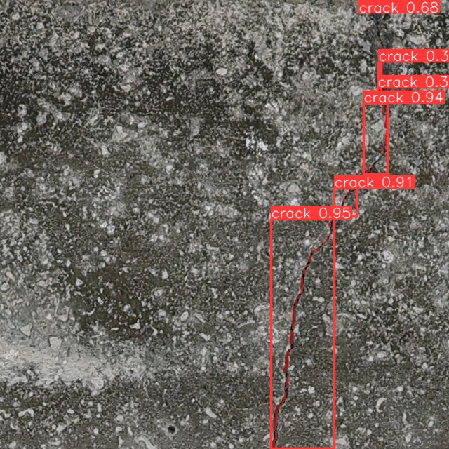

インフラ管理 × AI
機械学習を用いた微細ひび割れの検出精度向上に関する研究
Research on Improving the Detection Accuracy of Fine Cracks Using Machine Learning
担当：黒木 勘太郎
コンクリート構造物の画像からひび割れを AI で検出し，微細なひび割れの見逃しや誤検出を減らして，検出精度の向上を目指す
キーワード：
機械学習／画像セグメンテーション／YOLOv8-seg／ひび割れ
はじめに
橋やトンネルなどのコンクリート構造物は，年月とともに劣化し，表面にひび割れが生じます．ひび割れを早く見つけることは，構造物を安全に使い続けるために大切です．現在，ひび割れの点検は主に，人が目で見て確かめる目視点検で行われています．
しかし，目視点検には多くの労力と時間がかかります．もし AI が画像からひび割れを検出できれば，点検にかかる労力と時間を減らし，インフラの効率的な維持管理に貢献できると期待されます．
ひび割れの領域検出：画像セグメンテーション
ひび割れは，細く，形の決まっていない線です．そこで本研究では，画像を細かな点（画素）の単位で見て，それぞれの画素がひび割れかどうかを判別する画像セグメンテーション（Image Segmentation）に取り組んでいます．AI のモデルには，画像の中の物体を見つけ，その形を画素の単位で切り出せる YOLOv8-seg を用います．

研究内容
本研究では，機械学習による微細なひび割れの見逃しや誤検出を減らし，検出精度を向上させることを目的としています．本研究は，大きく2つの段階で行います．
- 学習：ひび割れが写った画像を AI に与え，ひび割れの特徴を学ばせます．
- 検出と評価：学習に使っていないテスト画像からひび割れを検出し，精度を評価します．
参考文献
- 川畑 琉皇，「深層学習によるひび割れ検出とひび割れ幅推定に関する研究」，鹿児島大学大学院理工学研究科 修士論文，2026年3月．